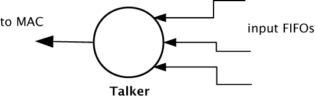
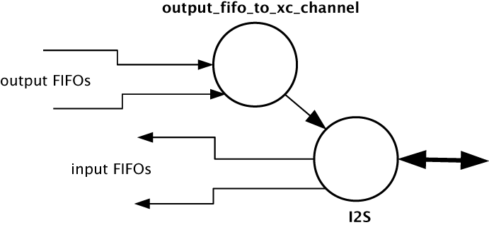

Audio Components¶
AVB Streams, Channels, Talkers and Listeners¶
Audio is transported in streams of data, where each stream may have multiple channels. Endpoints producing streams are called Talkers and those receiving them are called Listeners. Each stream on the network has a unique 64-bit stream ID.
A single endpoint can be a Talker, a Listener or both. In general each endpoint will have a number of sinks with the capacity to receive a number of incoming streams and a number of sources with the capacity to transmit a number of streams.
Routing is done using layer 2 ethernet addresses. Each stream is sent from a particular source MAC address to a particular destination MAC address. The destination MAC address may be a multicast address (that is several Listeners may receive it). In addition, AVB switches can reserve an end-to-end path with guaranteed bandwidth for a stream. This is done by the Talker endpoint advertising the stream to the switches and the Listener registering to receive it. If sufficient bandwidth is not available, this registration may fail.
Streams carry their own presentation time (the time that samples are due to be output) allowing multiple Listeners that receive the same stream to output in sync.
- Streams are encoded using the 1722 AVB transport protocol.
- All channels in a stream must be synchronized to the same sample clock.
- All the channels in a stream must come from the same Talker.
- Routing of audio streams uses ethernet layer 2 routing, which can be either unicast (one-to-one) or multicast (one-to-many).
- Routing is done at the stream level. All channels within a stream must be routed to the same place. However, a stream can be multicast to several Listeners, each of which picks out different channels.
- A single end point can be both a Talker and Listener.
- The stream ID is the only information you can obtain about a stream before registering to listen to it. Any other information about the stream must be communicated by a higher level protocol (see Section Configuration and application threads).
Internal Routing, Media FIFOs¶

As described in the previous section, an IEEE P1722 audio stream may consist of many channels. These channels need to be routed to particular audio I/Os on the endpoint. To achieve maximum flexibility the XMOS design uses intermediate media FIFOs to route audio. Each FIFO contains a single channel of audio.
The above figure shows the breakdown of 1722 streams into local FIFOs. The figure shows four points where transitions to and from media FIFOs occur. For audio being received by an endpoint:
- When a 1722 stream is received, its channels are mapped to output media FIFOs. This mapping can be configured dynamically so that it can be changed at runtime by the configuration component.
- The digital hardware interface maps media FIFOs to audio outputs. This mapping is fixed and is configured statically in the software.
For audio being transmitted by an endpoint:
- The digital hardware interface maps digital audio inputs to local media FIFOs. This mapping is fixed and cannot be changed at runtime.
- Several input FIFOs can be combined into a 1722 stream. This mapping is dynamic.
The configuration of the mappings is handled through the API describe in AVB API.
Note
Media FIFOs uses shared memory to move data between threads. So the filling and emptying of the FIFO must be on the same core.
Talker Units¶
A talker unit consists of one thread which creates IEEE P1722 packets and passes the audio samples onto the MAC. Audio samples are passed to this component via input media FIFOs. Samples are pushed into this FIFO from a different thread implementing the audio hardware interface. The packetizer thread removes the samples and combines them into IEEE P1722 ethernet packets to be transmitted via the MAC component.
When the packets are created the timestamps are converted to the time domain of the global clock provided by the PTP component, and a fixed offset is added to the timestamps to provide the presentation time of the samples (i.e the time at which the sample should be played by a listener).
A system may have several talker units. However, since samples are passed via a shared memory interface a talker can only combine input FIFOs that are created on the same core as the talker. The instantiating of talker units is performed via the API described in Section Component functions. Once the talker unit starts, it registers with the main control thread and is control via the main AVB API described in Section AVB API.
Listener Units¶

A listener units takes IEEE P1722 packets from the MAC and converts them into a sample stream to be fed into a media FIFOs. Each audio listener component can listen to several IEEE P1722 streams.
A system may have several listener units. The instantiating of listener units is performed via the API described in Section Component functions. Once the listener unit starts, it registers with the main control thread and is controlled via the main AVB API described in Section AVB API.
Media FIFOs to XC Channels¶
Sometimes it is useful to convert the audio stream in a media FIFO into a sample stream over an XC channel. This may be needed to move samples off core or if the audio interface thread requires samples over a channel. Several functions are provided to do this and are described in Section Component functions.
Audio Hardware Interfaces¶
The audio hardware interface components drive external audio hardware, pull audio out of media output FIFOs and push into media input FIFOs.
Different interfaces interact in different ways, some directly push and pull from the media FIFOs, whereas some (for performance reasons) require samples to be provided of an XC channel.
The following diagram shows the thread layout of the I2S component which pushes its input directly to media input FIFOs but takes output FIFOs from an XC channel. The diagram shows the supporting thread that takes samples out of the media output FIFOs and serializes them over an XC channel:
Details on the available audio components can be found in Section Component functions.